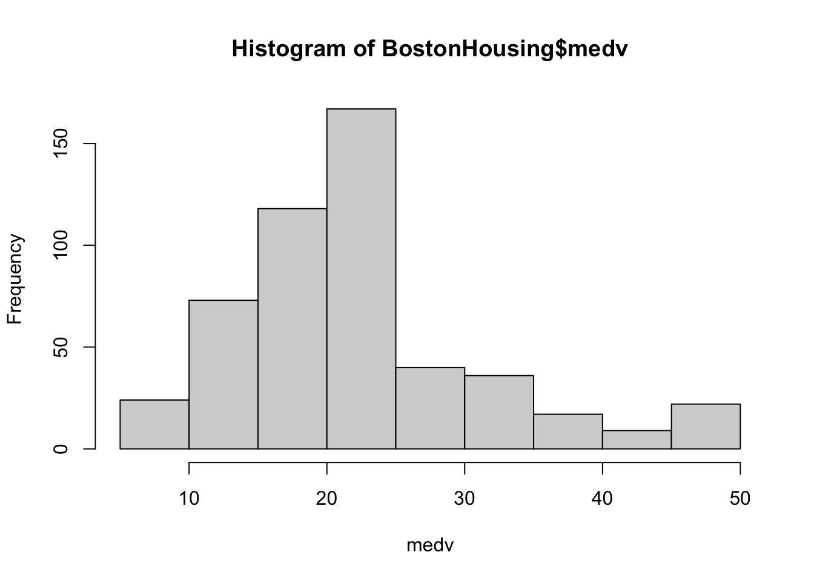
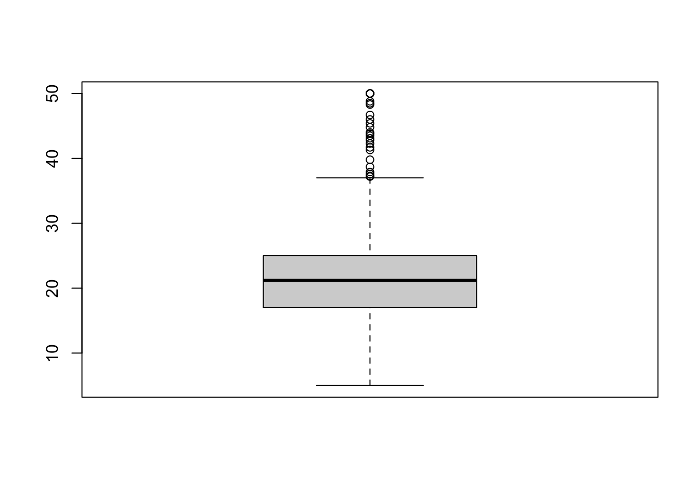
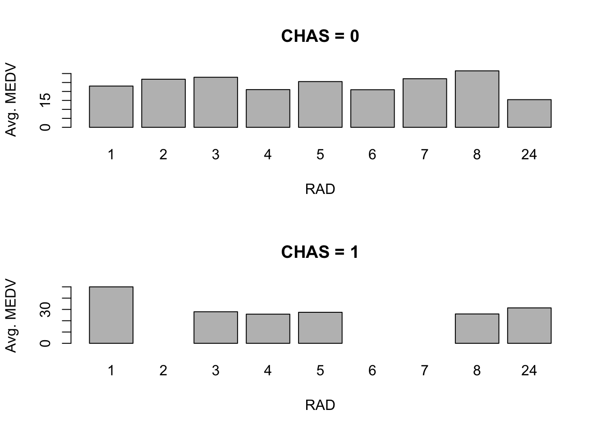
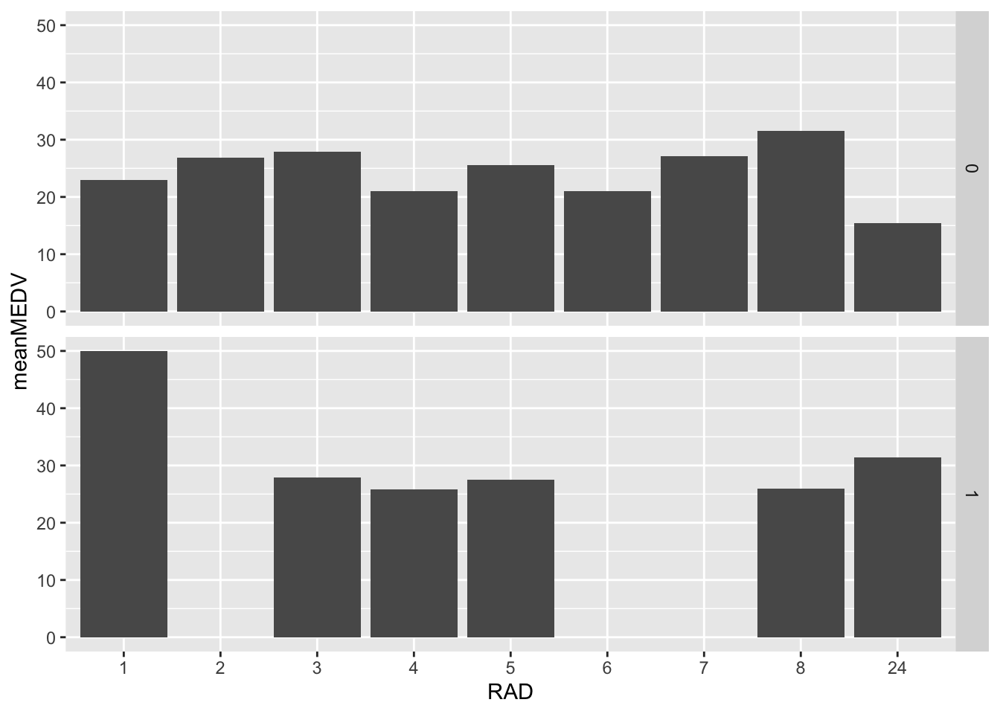
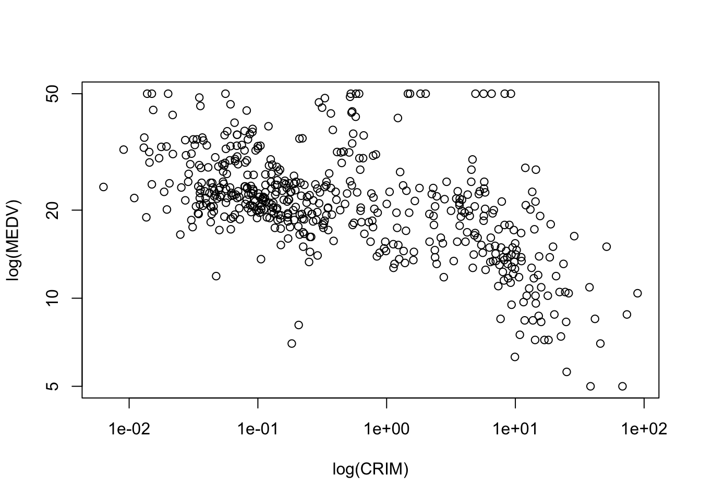
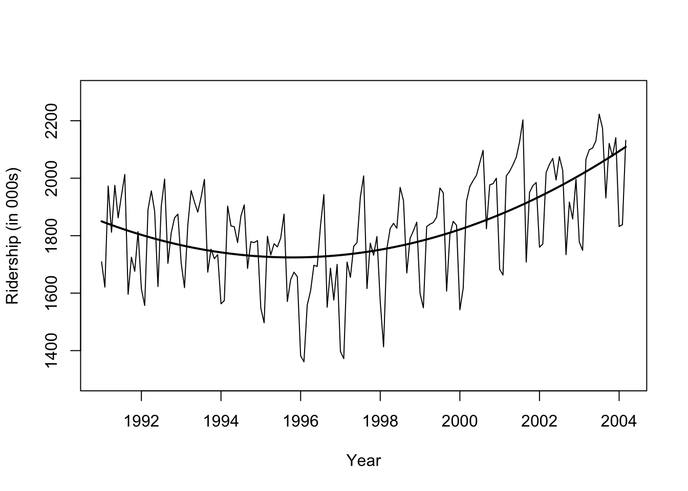
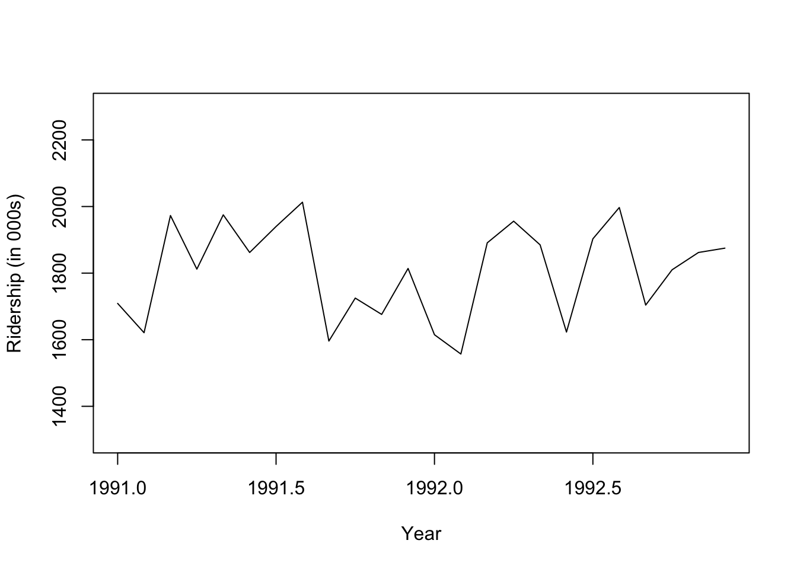

crim zn indus chas nox
Min. : 0.00632 Min. : 0.00 Min. : 0.46 0:471 Min. :0.3850
1st Qu.: 0.08205 1st Qu.: 0.00 1st Qu.: 5.19 1: 35 1st Qu.:0.4490
Median : 0.25651 Median : 0.00 Median : 9.69 Median :0.5380
Mean : 3.61352 Mean : 11.36 Mean :11.14 Mean :0.5547
3rd Qu.: 3.67708 3rd Qu.: 12.50 3rd Qu.:18.10 3rd Qu.:0.6240
Max. :88.97620 Max. :100.00 Max. :27.74 Max. :0.8710
rm age dis rad
Min. :3.561 Min. : 2.90 Min. : 1.130 Min. : 1.000
1st Qu.:5.886 1st Qu.: 45.02 1st Qu.: 2.100 1st Qu.: 4.000
Median :6.208 Median : 77.50 Median : 3.207 Median : 5.000
Mean :6.285 Mean : 68.57 Mean : 3.795 Mean : 9.549
3rd Qu.:6.623 3rd Qu.: 94.08 3rd Qu.: 5.188 3rd Qu.:24.000
Max. :8.780 Max. :100.00 Max. :12.127 Max. :24.000
tax ptratio b lstat
Min. :187.0 Min. :12.60 Min. : 0.32 Min. : 1.73
1st Qu.:279.0 1st Qu.:17.40 1st Qu.:375.38 1st Qu.: 6.95
Median :330.0 Median :19.05 Median :391.44 Median :11.36
Mean :408.2 Mean :18.46 Mean :356.67 Mean :12.65
3rd Qu.:666.0 3rd Qu.:20.20 3rd Qu.:396.23 3rd Qu.:16.95
Max. :711.0 Max. :22.00 Max. :396.90 Max. :37.97
medv
Min. : 5.00
1st Qu.:17.02
Median :21.20
Mean :22.53
3rd Qu.:25.00
Max. :50.00
Month Ridership Amtrak.Ridership.Number.of.Passengers...in.thousands. X X.1
1 Jan-91 1709 NA NA NA
2 Feb-91 1621 NA NA NA
3 Mar-91 1973 NA NA NA
4 Apr-91 1812 NA NA NA
5 May-91 1975 NA NA NA
6 Jun-91 1862 NA NA NA
7 Jul-91 1940 NA NA NA
X.2
1 NA
2 NA
3 NA
4 NA
5 NA
6 NA
7 NA
str(amtrak)
'data.frame': 159 obs. of 6 variables:
$ Month : chr "Jan-91" "Feb-91" "Mar-91" "Apr-91" ...
$ Ridership : int 1709 1621 1973 1812 1975 1862 1940 2013 1596 1725 ...
$ Amtrak.Ridership.Number.of.Passengers...in.thousands.: logi NA NA NA NA NA NA ...
$ X : logi NA NA NA NA NA NA ...
$ X.1 : logi NA NA NA NA NA NA ...
$ X.2 : logi NA NA NA NA NA NA ...
summary(amtrak)
Month Ridership
Length:159 Min. :1361
Class :character 1st Qu.:1698
Mode :character Median :1831
Mean :1822
3rd Qu.:1967
Max. :2223
Amtrak.Ridership.Number.of.Passengers...in.thousands. X
Mode:logical Mode:logical
NA's:159 NA's:159
X.1 X.2
Mode:logical Mode:logical
NA's:159 NA's:159
dim(amtrak)
[1] 159 6
5.3 기본적 시각화
히스토그램 (Histogram)
상자그림 (Boxplots)
막대 차트 (Bar charts)
산점도 (Scatter plots)
선 그래프 (Line graphs)
5.3.1 히스토그램 (histogram)
주택가격의 중앙값(medv)의 히스토그램을 살펴보자.
hist(BostonHousing$medv, xlab ="medv")

5.3.2 상자 그림 (box plot)
상자그림의 기본 문법은 다음과 같다.
boxplot(BostonHousing$medv)

상자 그림은 다음과 같이 그린다.
위쪽 이상점은 Q3 + 1.5*(Q3-Q1)위에 있는 점으로 정의된다. 아래쪽 이상점도 비슷하게 정의된다.
박스: Q1부터 Q3까지의 범위 (가운데 선은 Q2 중간값)
박스의 위쪽/아래쪽 bar는 maximum/minimum of non-outliers
상자그림은 여러 하위군을 비교하기에도 좋다. 다음은 주택가격 중앙값을 찰스강변(1) or 찰스강변 아님(0)으로 구분하여 상자그림을 그렸다.
평균 주택가격을 찰스강변 지역(chas=1), 찰스강변 이외지역(chas=0)으로 구분하여 막대그래프로 그리고자 한다.
먼저 각 지역들에 대한 요약값을 계산한다.
data.for.plot <-aggregate(BostonHousing$medv, by =list(BostonHousing$chas), FUN = mean)names(data.for.plot) <-c("CHAS", "MeanMEDV")print(data.for.plot)
CHAS MeanMEDV
1 0 22.09384
2 1 28.44000
위와 같이 한 컬럼이 범주, 한 컬럼이 값을 뜻하는 테이블이 있으면 막대그래프를 그릴 수 있다.
응용처: 추가적인 전처리를 고려할 때, 또는 model에서 interaction term을 추가할지 결정할 때 (단순 prediction이 아닌 모델/계수의 해석이 중요한 상황에서)
전략 2. 차트 조절
변수변환
연속변수의 스케일 변경 (rescaling)
연속변수 그룹화 (aggregation)
범주변수의 범주 재조정
5.5.1 속성 변수를 추가하는 전략
보스턴 가구 데이터에서 NOX vs. LSTAT의 관계를 살필 때, 소득이 높은 개체 (medv > 30)와 소득이 낮은 개체에 따라 색상을 다르게 주었다.
ggplot은 Hadley Wickham이 만든 고품질의 시각화를 만들 수 있는 라이브러리이다. ggplot의 문법에 익숙해지면 더 고품질의 시각화를 간단하게 만들 수 있다. ggplot에 대한 다양한 튜토리얼이 있으나, 자세한 소개는 Modern Data Science with R의 3장을 구글 번역하여 보는 방법도 있다.
plot(y=BostonHousing$nox, x=BostonHousing$lstat, ylab ="NOX", xlab ="LSTAT",col =ifelse(BostonHousing$medv >30, "black", "gray"))# add legend outside of plotting area# In legend() use argument inset = to control the location of the legend relative# to the plot.legend("topleft", inset=c(0, -0.2),legend =c("MEDV > 30", "MEDV <= 30"), col =c("black", "gray"),pch =1, cex =0.5)# alternative plot with ggplotlibrary(ggplot2)
# compute mean MEDV per RAD and CHAS# In aggregate() use argument drop = FALSE to include all combinations# (exiting and missing) of RAD X CHAS.data.for.plot <-aggregate(BostonHousing$medv, by =list(BostonHousing$rad, BostonHousing$chas),FUN = mean, drop =FALSE)names(data.for.plot) <-c("RAD", "CHAS", "meanMEDV")# plot the datapar(mfcol =c(2,1))barplot(height = data.for.plot$meanMEDV[data.for.plot$CHAS ==0],names.arg = data.for.plot$RAD[data.for.plot$CHAS ==0],xlab ="RAD", ylab ="Avg. MEDV", main ="CHAS = 0")barplot(height = data.for.plot$meanMEDV[data.for.plot$CHAS ==1],names.arg = data.for.plot$RAD[data.for.plot$CHAS ==1],xlab ="RAD", ylab ="Avg. MEDV", main ="CHAS = 1")

# alternative plot with ggplotggplot(data.for.plot) +geom_bar(aes(x =as.factor(RAD), y = meanMEDV), stat ="identity") +xlab("RAD") +facet_grid(CHAS ~ .)
Warning: Removed 3 rows containing missing values or values outside the scale range
(`geom_bar()`).

속성(변수)들이 모두 연속형이라면, 모든 조합의 산점도를 한꺼번에 그리는 방법도 있다.
## simple plot# use plot() to generate a matrix of 4X4 panels with variable name on the diagonal,# and scatter plots in the remaining panels.plot(BostonHousing[, c(1, 3, 12, 13)])
# to use logarithmic scale set argument log = to either 'x', 'y', or 'xy'.plot(BostonHousing$medv ~ BostonHousing$crim,xlab ="log(CRIM)", ylab ="log(MEDV)", log ='xy')

시계열의 경우 추세선을 추가하거나,
#install.packages("forecast")library(forecast)#Amtrak.df <- read.csv("Amtrak data.csv")ridership.ts <-ts(amtrak$Ridership, start =c(1991, 1), end =c(2004, 3), freq =12)## fit curveridership.lm <-tslm(ridership.ts ~ trend +I(trend^2))plot(ridership.ts, xlab ="Year", ylab ="Ridership (in 000s)", ylim =c(1300, 2300))lines(ridership.lm$fitted, lwd =2)

집계 수준을 변경하면 트렌드 파악에 도움이 된다.
## zoom in, monthly, and annual plotsridership.2yrs <-window(ridership.ts, start =c(1991,1), end =c(1992,12))plot(ridership.2yrs, xlab ="Year", ylab ="Ridership (in 000s)", ylim =c(1300, 2300))

monthly.ridership.ts <-tapply(ridership.ts, cycle(ridership.ts), mean)plot(monthly.ridership.ts, xlab ="Month", ylab ="Average Ridership",ylim =c(1300, 2300), type ="l", xaxt ='n')## set x labelsaxis(1, at =c(1:12), labels =c("Jan","Feb","Mar", "Apr","May","Jun","Jul","Aug","Sep", "Oct","Nov","Dec"))